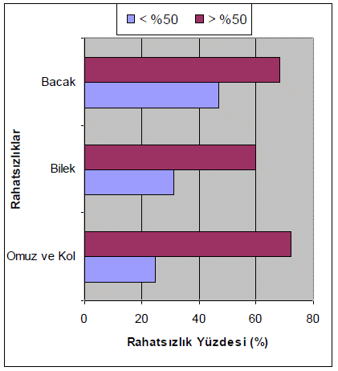

|
3.3. Eylemsizlik Kuvveti
Her ne kadar Citaro'nun süspansiyon sistemi iyi olsa da otobüs fren yaptýðýnda, yolcularýn lomber omurlarý üzerinde eylemsizlik kanunundan dolayý ciddi kuvvetler oluþmaktadýr ve bu kuvvet omurlarýn hareket yönünün tersine belde abdüksiyon hareketi oluþmaktadýr. Bu da bel rahatsýzlýklarýna neden olmaktadýr. Bu olay yolcular otobüsün gidiþ yönüne dik durduklarý için gerçekleþmektedir.
3.4. Zemin
Citaro'nun süspansiyon sistemi oldukça iyidir. Bu yüzden zemini sert olsa da, titreþimden çok etkilenmiyorsunuz. Ancak iyileþtirme için zemin, titreþimleri emebilecek bir döþemeyle kaplanabilir.
Görüldüðü gibi otobüslerde ayakta yolculuk yapmak ergonomik açýdan birçok sýkýntý doðurmaktadýr. Özellikle yoðun saat ve hatlarda yolcular yukarýda deðinilen problemleri çok sýk yaþamaktadýrlar. Yaptýðýmýz ankette otobüs kullananlara yolculuklarýnýn yaklaþýk ne kadarýný ayakta geçirdiklerini ve hangi problemleri yaþadýklarý soruldu. Alýnan cevaplara göre, Grafik 1'de de görüldüðü gibi, yolculuðunun %50'sinden fazlasýný ayakta geçirenlerin %72'si omuz ve kol aðrýlarý çektiklerini söylediler. Bu oran %50'den az ayakta duranlarda sadece %25. Ayrýca bacak aðrýsý için bu oran sýrasýyla %68'e %47 ve bilek aðrýsý için %60'a %31'dir. En önemli sýkýntý omuzlar ile ilgili olaný gözükmektedir. Bu rahatsýzlýklarýn genel sebepleri yukarýda anlatýlmýþ olup bu nedenleri daha da etkili kýlan faktörler aþýrý yoðunluk ve trafik nedeniyle artan yolculuk süresinin statik yükleri artýrarak doku ve kaslarý aþýrý yormasýdýr.

Grafik 1. Anketten Çýkan Bazý Sonuçlar
4. Sonuçlar ve Deðerlendirmeler
Citaro otobüsler yukarýda da belirtilen bazý hatalarý olmasýna raðmen oturarak yolculuk sýrasýnda nisbeten rahatlýk saðlamaktadýr. Oturarak daha rahat bir yolculuk için yapýlmasý gerekenler genelde koltuk sayýsýnýn azalmasýna neden olacaðý için mevcut þartlarda (aþýrý yolcu yoðunluðu, yetersiz otobüs sayýsý) bu düzeltmeler mümkün gözükmemektedir. Bazý düzeltmeler (koltuk uçlarýnýn yuvarlatýlmasý, sýrt desteðinin lomber destek saðlayacak þekilde dizayn edilmesi, koltuk yüzeyine yukarý doðru 5-10°'lik bir açý verilmesi, kolçaklarýn iyileþtirilmesi) ise koltuk sayýsýný etkilemeden yapýlabilir ve bunlar daha rahat bir yolculuk için uygulanmalýdýr.
Asýl sorun olan kýsým ayakta yolculuk yapanlarýn durumudur. Aþýrý yoðunluða, trafik nedeniyle artan yolculuk süreleri de eklendiðinde belediye otobüslerinde ayakta yolculuk yapmak çok ciddi rahatsýzlýklara yol açmaktadýr. Bunlarýn en önemlileri omuz-kol, bilek ve bacaklardaki rahatsýzlýklardýr. Bununla ilgili yapýlacak ne yazýk ki çok þey yoktur. Tutacaklarýn kelepçelerini ayarlanabilir yapmak, yolculara hiç deðilse vücut duruþlarýný deðiþtirebilecek kadar kiþisel alan býrakmak, zemini titreþimleri emebilecek bir döþemeyle kaplamak bunlardan bazýlarýdýr. Kýsa vadeli çözüm olarak yoðun hatlara Þekil 3'te de gösterilen koltuk sayýsý azaltýlmýþ, ayakta durma alaný geniþletilmiþ otobüsler atanabilir.
Asýl çözüm Ýstanbul insanýna trafikten etkilenmeyecek, gidecekleri yerlere hýzlýca ulaþtýrabilecek raylý sistem alternatiflerinin sunulmasýdýr. Raylý sistem çözümleri pahalý olsa da þu anda ödenen bedelden çok daha ucuza geleceði aþikardýr. Yoðun saatlerde otobüs kullanmak ve Ýstanbul trafiði sebebiyle oluþan rahatsýzlýklar ve stress, insanlarýn hem kendi hem de çevresindekilerin fizyolojik ve psikolojik yapýlarýný bozmaktadýr. Ýþ verimliliði düþmektedir, rahatsýzlýklarýn giderilmesi için týbbi masraflar ortaya çýkmaktadýr. Ýstanbul gibi nüfusu 10 milyonu geçen bir þehirde bu masraflarýn büyüklüðü ortadadýr.
Bu çalýþma ÝETT'nin en yeni otobüsleri olan Citaro modeli üzerine yapýlmýþtýr. Ancak ÝETT'nin filosunun hepsi bu otobüslerden oluþmamaktadýr. Tablo 2'de de görüldüðü gibi son zamanlarda alýmý yapýlmamakla birlikte en çok kullanýlan otobüsler Ikaruslardýr. Bu
otobüslerin çok daha büyük ergonomi sorunlarý vardýr. Özellikle süspansiyon sisteminin zayýflýðý nedeniyle yolcular aþýrý titreþime ve ses yalýtýmýnýn zayýflýðý nedeniyle de aþýrý gürültüye maruz kalmaktadýr. Ýleriki aþamalarda bu tip otobüslerle ilgili daha geniþ çalýþma yapýlmalýdýr.
Tablo 2. ÝETT Filosunun Otobüs Daðýlýmý
Marka |
2002 |
2003 |
2004 |
2005 |
2006 |
MAN solo |
480 |
526 |
343 |
306 |
249 |
MAN körüklü |
|
|
172 |
172 |
173 |
IKARUS solo |
1404 |
1404 |
1248 |
1245 |
1244 |
IKARUS körüklü |
|
|
155 |
147 |
139 |
MERCEDES solo |
561 |
561 |
479 |
479 |
829 |
MERCEDES körüklü |
|
|
82 |
82 |
185 |
DAF/ OPTARE |
26 |
26 |
26 |
26 |
26 |
BERKHOF |
7 |
7 |
6 |
6 |
4 |
Toplam: |
2478 |
2524 |
2511 |
2463 |
2849 |
Kaynaklar
- Andersson, G.B.J., Örtengren, R., Nachemson, A., Elfström, G., 1974, Lumbar disk pressure and myoelectric back muscle activity during sitting. I. Studies on an experimental chair, Scandinavian Journal of Rehabilitation Medicine, 6, 3, 104-114.
- Badami, M.G., Haider, M., 2007, An analysis of public bus transit performance in Indian cities, Transport. Res. Part A doi:10.1016/j.tra.2007.06.002.
- Coleman, N., Hull, B.P., Ellitt, G., 1998, An empirical study of preferred settings for lumbar support on adjustable office chairs, Ergonomics, 41, 4, 401-419.
- EN 1335-1:2000 Office Furniture: Office Work Chair, Part 1: Determination of Dimensions, CEN.
- Hensher, D.A., 2007, Sustainable public transport systems: Moving towards a value for money and network-based approach and away from blind commitment, Transport Policy 14, 98-102.
- Hirao, N., Kajiyama, M., 1994, Seating for pregnant workers based on subjective symptoms and motion analysis, Hard Facts about Soft Machines: The Ergonomics of Seating, Taylor & Francis, 317-331.
- Karlström, M., 2005, Local environmental benefits of fuel cell buses: a case study, Journal of Cleaner Production 13, 679-685.
- Kogi, K., 1980, Passenger requirements and ergonomics in public transport : Ergonomics, Applied Ergonomics 11, 50-51.
- Oxford, H.W., 1974, Factors in the design of seats used in public transport: Human Factors in Transportation.
- Proceedings of 10th Annual Conference of the Ergonomics Society of Australia and New Zealand, Sydney, Nov. 1973, Applied Ergonomics 5, 173.
- Pheasant, S., Haslegrave, C.M., 2006, Bodyspace: Anthropometry, ergonomics, and the design of work, CRC Press, Taylor & Francis.
- Rebiffe, R., 1966, An ergonomic study of the arrangement of the driving position in motor cars, In Proceedings of the Institution of Mechanical Engineers, 181, Part 3-D, 43-50.
- Schaller, B., Lowell, D., Stuart, K.R., 1998, MTA New York City Transit Research Shows What Customers Want in Low Floor Buses, Mass Transit, May/June.
- Zannin, P.H.T., Diniz, F.B., Giovanini, C., Ferreira, J.A.C., 2003, Interior noise profiles of buses in Curitiba, Transportation Research Part D 8, 243-247.
|